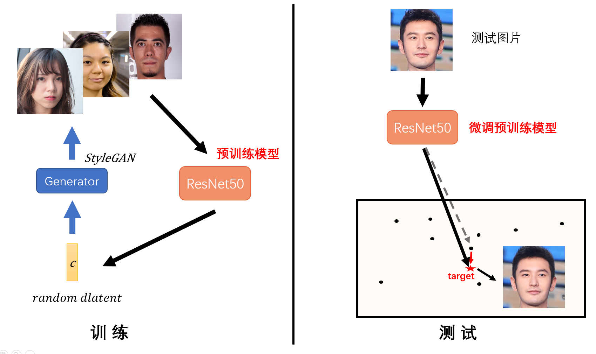
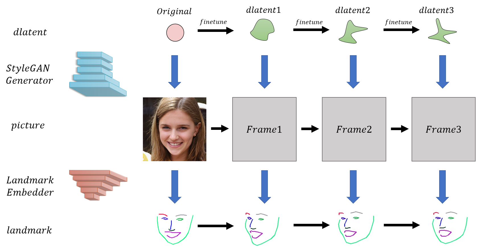

欢迎更多的人来玩/研究生成模型
下面将会介绍网站采用的技术背后的原理，希望能让更多的朋友了解生成模型是如何运作的。
如果您是AI相关研究人员且对生成模型有一定认知，建议您直接跳转至第三节 StyleGAN模型介绍；
如果您不是AI研究人员但对此有浓厚兴趣，建议您按照
深度学习->
生成模型->
StyleGAN的顺序逐步研究。
第1页目录：深度学习 ->生成模型 ->StyleGAN ->玩代码 ->定制人脸生成 ->现实人脸编码 ->人脸属性编辑->人脸视频合成->
第2页目录：含穿着人物生成 ->含穿着人物服装迁移、姿态变化与动作视频生成
第3页目录：应用类生成算法——视频擦除
第4页目录：多模态生成（新）
深度学习
如果您想对深度学习有一个比较准确的认识和理解，推荐下面这篇吴恩达老师的课程笔记。我认为这是一篇讲解非常清楚的入门读物，语言通俗并且分析全面。
生成模型
生成模型在研究的事情就是：让计算机学会理解我们所见到的这个世界是如何被“绘制”出来的。具体来说，我们喂给计算机一堆真实世界的图片，然后通过深度学习算法，计算机就能学会自己绘制与之类似的图片，甚至有所创新。
这样的问题听起来是十分困难的，生成模型是如何解决它的呢？首先最重要的是理解生成模型的建模思维。

生成模型最根本的一个理论基石是：图像皆分布。每一张图片在计算机眼中就是一个像素矩阵，因此将所有的图片代表的矩阵合在一起，就形成了一个巨大的矩阵空间（如上图所示，里面每一个点代表一个矩阵（也就是一张图片））。在这个空间当中，如果把所有“狗”的图片找出来，会发现它们聚集在矩阵空间当中的某一片区域，这个区域就代表了“狗”的图像对应的分布。同理，其他所有类型的图像（如猫，车，人等）都会满足这样的特性。因此这就是图像皆分布的意思。
然后，我们就要想办法让计算机找出这样的图像分布来。考虑到图像分布是未知的，并且难以计算，所以我们需要借助神经网络来帮助我们（如上图所示）。人本身能做的事就是构建一个已知的简单分布（譬如高斯分布），而神经网络帮我们寻找从简单分布到图像复杂分布的转换方式，这样当我们想让计算机绘制新的图片时，就只需要从简单分布中采样一个点出来，交给神经网络，便能绘制一个新的图像。因此这就是生成模型实际上在做的事情。
目前效果最突出的两种生成模型，一个是大名鼎鼎的GANs（生成对抗网络），另一个是潜力无限的VAE（变分自编码器）。本节将详细介绍这两种生成模型的运行原理，如果读者还有对其他生成模型感兴趣的（譬如Flow流模型），可以自行研究。
GANs-生成对抗网络
生成对抗网络的建模方式有两种，一种是基于概率模型（Possibility Based Model）的建模，另外一种是基于能量模型（Enegy Based Model）的建模。当然，能量模型与概率模型并不完全相互独立，但是二者建模的方式本质上是不同的。
· 基于概率模型建模
先介绍第一种建模方式，也是GANs最主流的建模方式（90%的GANs都是基于这一理论）：基于概率模型建模。概率模型认为，判别器计算样本x属于类别y的条件概率P（y|x），生成器计算样本x在整个分布中的生成概率，也就是联合概率P（xy），这样把二者的概率整合在一起，就得到了真实图像的分布概率、也就是联合概率的计算式：P（xy）=P（x）P（y|x）。我直接将以前写的总结笔记搬运到下面，不过，由于我是主攻GANs的，所以这部分笔记写得特别细，建议您直接阅读第二章的前面几节，将GANs的主要搭建思路弄清楚就行了。
· 基于能量模型建模
下面介绍GANs的第二种建模方式，基于能量模型（EBM）的建模。能量模型下直接构建了一个能量函数Uθ(x)，希望通过调整这个能量函数的参数θ，使其能够拟合成真实图像的分布。
EBM模型与PBM模型在设计思路上最大的不同在于，PBM模型的GANs先构造生成器，然后由于缺失生成分布与真实分布间散度的计算，再引入了一个判别器来实现这个计算；而EBM模型的GANs先构造判别器，然后由于缺失负相样本，再引入了一个生成器来实现这个样本的提供。
VAE-变分自编码器
VAE是另外一种生成模型，与GANs不同的是，它是基于高斯混合模型（Gaussian Mixture Model）的建模。高斯混合模型认为，所有的分布都可展开为若干正态分布的叠加，因此直接构建编码的每一个码元控制对应某个正态分布的参数，所有的正态分布叠加就成为了复杂的图像分布。这就是VAE构建编码到图像的映射关系的最初构想。
· 基于高斯混合模型建模
VAE的网络模型特别好理解，就是基于自编码器架构的进一步处理。但是VAE建模的巧妙之处在于，它同样引入了两个神经网络，但是目的不是在于为了引入对抗，而是引入“逼迫”——即编码器每次都会变成和解码器一致的样子，用变分下界“顶”住解码器，使得解码器在每次训练中只能取得进步，不能退步。
基于样式的生成对抗网络——StyleGAN
这一部分就会介绍本网站的人脸图像生成用到的技术--StyleGAN。当然，首先我必须得道个歉，所谓的“高颜值人脸生成”并不是指这个模型就能直接生成高颜值的人脸照片，考虑到颜值是个很主观的东西，“失之毫厘，颜值千里”，所以让计算机来判定一个人的高颜值想想也是不太可能的。但是，由于这个模型具备了生成高清且逼真人脸的能力，所以就为高颜值人脸的出现提供了可能性，我在生成日志里边展示的高颜值照片也是挑选后的结果。
下面开始正式介绍StyleGAN。
· 基于样式、层层递进的生成结构StyleGAN
· 更多学习资料
1.搜集的经典论文及精翻译文（）
2.全套学习笔记（）
玩代码
· 原始NVIDIA代码已开源，下载地址：
https://github.com/NVlabs/stylegan
· Google Drive数据集如果不好下载，可以戳度盘地址：
FFHQ数据集（89.4GB）：https://pan.baidu.com/s/1WLJgZ1C_3TVAyBeHYQX9OA
提取码：qmg2
CelebA_HQ数据集（29.6GB）：https://pan.baidu.com/s/1uAEtE8Ado6v2tP6SjXjqAg
提取码：crao
定制人脸生成
这一部分会介绍基于StyleGAN，进一步地做定制人脸生成使用的方法。目前采用过的方法有三种，第一种是从源头上通过控制生成码Z的分布范围，从而控制生成的人脸类型，这种方法能控制性别、人种、年龄等粗略类型；第二种方法是在图片生成器的内部，通过特定维度上特征的替换，将引入的目标（模板）人脸的精细风格赋予在生成人脸上，这种方法能控制白皮肤、卷发等精细类型；第三种方法与前两种思路完全不同，复杂一些但更通用，需要修改StyleGAN的架构，将InfoGAN与StyleGAN结合为Info-StyleGAN，从而实现仅用一个模型就能控制生成图片的类型。
· 方法一 从源头控制生成图片
定制人脸生成需要3个神经网络，分别是Z码生成器，图片生成器，和图片分类器。它的主要思想是，针对我们想要的特定类型的图片，首先训练出一个对应的图片分类器出来，然后固定住图片生成器与图片分类器，只训练Z码生成器（C是随机向量），从而找到Z码的范围，使得通过该Z码生成的图片，能满足图片分类器的要求，即：找到z的分布使得对应y的得分值最高。
在实际模型搭建中，Z码生成器（Dense Generator）是一个256维到512维的简单全连接网络，图片生成器取用StyleGAN里面的模型，图片分类器是一个已训练好的类型分类器（譬如男/女分类器等，用CNN就能达到比较好的效果）。损失函数方面有两个组成部分，一部分是（找到z）让y的得分值越高越好，另一部分是让z的熵越大越好（即z有多样性）。由于实际的训练只需训练三个全连接层，所以epoch数无需太高。
最后，每对应一个不同的图片分类器，就会训练出一个对应的Z码生成器。在人脸定制中演示的模型，就是准备了多种Z码生成器，和一个图片生成器，然后根据用户的选择指定对应的Z码生成器，从而实现定制人脸生成。
· 方法一优化 取消Z码生成器，改为微调图片生成器
在后续的实验中发现，对于某些分类器来说，训练出的Z码生成器是不太稳定的。举一个例子，如果希望指定生成黑种人或者白种人脸，上述方法可以实现，但是如果用同样的方法训练生成黄种人脸，就很难稳定生成。造成这种现象的原因是，黄种人界于白、黑种人之间，它的特点标志不清晰，因此Z码生成器很难找到一个Z码的区域，能够稳定生成黄种人脸。为了改善这一情况，我们可以考虑取消Z码生成器，改为微调图片生成器。
如上图所示，首先用图片分类器将原始数据集中的目标图片挑选出来（譬如黄种人脸），制作成新的训练集（New Dataset），如果数据集数目很少时还可以用ADA的方法做数据增强。接下来，在新的数据集下训练图片生成器，其初始化参数为StyleGAN的预训练模型参数，训练状态建议回复至第10000个kimg处（见代码），因为此时已经进入了1024*1024分辨率的微调阶段，然后持续训练即可。接下来展示一段在黄种人脸生成器的训练过程中的人脸迁移情况。
如上图所示，从左至右为同一生成码在训练过程中生成图片的变化。可以看出，随着训练的进行，原本对应生成非黄种人的生成码，逐渐变成了生成黄种人的样子。
· 方法二 从生成过程中控制生成图片
不过上述方法，只能从大体上控制生成图片的类型，因为图片分类器的制作成本通常比较高（需要大量含标签数据），所以图片分类器的划分角度一般较为宽泛（譬如男/女，老/少，黑/白等），不宜过细。所以，如果我们希望定制的人脸类型能更精细的话，只能考虑追求一些更简便的处理，不妨关注一下StyleGAN生成器的内部结构。
可以看出，其实真正决定StyleGAN生成图片类型的，在于控制生成网络的18个特征码（它们分别控制的特征类型已在图中标出）。于是，现在我们希望能更精细控制生成图片的类型，就可以考虑用已有图片的特征码，对其进行替换，从而让其具有被替换图片的特定特征。
譬如在上面这个例子中，用模板照片的5,6,7,8维特征码对原始的生成图片进行替换，就会得到一张新的生成图片，其具有模板人脸的精细特征，例如黄皮肤、黑头发、黑眼睛等等。而如果选择不同维度的特征码进行替换，新图片得到的特征也会不一样。不过在我的实验中，一般建议替换5,6,7,8维，因为替换更低的维度会让生成效果不稳定，而替换更高的维度会让生成效果不明显。最终，多做几次尝试就能找到合适的模板以及合适的维度替换方案，比如在人脸定制中展示的小男孩样例，就是用这样的方法生成的。
· 方法三 借助InfoGAN的思想修改StyleGAN的架构
前面两种方法虽然能实现定制生成，但是由于每一种分类都是单独一个模型，这不利于进一步扩展。我们希望能构造一个通用模型，它能够实现所有定制化的需求。因此，我们借助InfoGAN的思想，将Info信息引入StyleGAN的生成器中，构造出新的具有语义限制的生成器。
如上图所示，新的生成器输入info向量-c和噪音向量-z，其中c控制人脸类型，而z决定人脸样貌。生成图片X同时被传给判别器和分类器，其中判别器的作用是保证生成图片的清晰与逼真度，分类器的作用是保证生成图片的类别符合向量c的控制——因为它从生成图片中提取出一个新的向量，这个向量要与c尽可能一致，而c包含的信息仅有图像类别，所以只有生成图片也符合图像类别的情况下，提取出的向量才能与c一致，更详细的证明请参阅InfoGAN。最后分类器与判别器共用大部分参数，只保留最后几层参数不一致。
如何实现现实人脸照片的编码
因为目前StyleGAN生成的都是虚拟人物，如果我们能找到现实人物在初始域中对应的编码的话，那就意味着可以对现实中的人物进行操作和变化，这会带来一个很有意思的场景：我们每个人的人脸都可以用一个（18,512）维度的向量来表示，并且只要对这个向量稍作一些变动，就能生成出一个略微不同于我们的新的人脸模样（如下图所示）。
我们认为这个想法是有意义的，因为这意味着虚拟人物的生成能与现实人物产生依托或关联。首先有必要从理论上来简单解释一下这个想法——虽然我们无法保证StyleGAN的生成分布域涵盖了地球上所有人脸的样貌，但是由于StyleGAN的生成基于分级控制特征，并且训练集涵盖了人种、性别、年龄等各种样式的人脸，因此我们可以在生成分布中找到一张与现实人脸无比接近的人脸，并最终计算出其在初始域中对应的编码。
上图便解释了实际要做的事情，下面开始设计模型以实现这一想法。既然要做图像提取特征码，我们首先想到可以借鉴BiGAN（双向GAN）的思维，简言之就是加一个编码器，将生成器的输出当作输入，并将生成器的输入当作输出去进行训练，下面展示一个基于ResNet50模型设计的编码器。
上图是编码器的内部结构，主要是在Resnet50的模型后面加上几个转换层（添加较多的转换层有利于将图像特征转换为隐空间编码），实现上是比较容易的。下面来看一下训练和测试的流程。

如上图所示，训练时采用StyleGAN提供的源源不断的样本（该样本最好加上一些噪音，因为测试时获得的图片往往是不清晰的，而用有噪音的图片训练出的模型更容易在测试图片上获得好效果），得到一个预训练模型。不过考虑到这是在生成图片域上的训练，而在测试时我们用到的是真实图片，因此对于特定的图片还需要进行二次调整（迭代优化），才能找到它在初始分布域上的准确位置（参考的论文在这里，也可以查看译文）。下面展示一个测试效果，采用的是一张我本科同学的照片，发现基于StyleGAN重构生成的图片能与原图达到非常高的重合性。
我还进一步做了很多实验，主要是在大量明星名人的头像上，发现StyleGAN的复原效果是很惊艳的，不仅肖像人物、肖像背景都能基本贴合原图，而且对于粗糙肖像图的重构还能提升其画质。下面展示两张玛丽莲梦露和杨幂的重构生成图片。
更多名人的头像生成效果展示在生成日志(P6)上，并且所有名人的生成码都开放下载。
如何实现人脸属性编辑
上一章讲述了如何用StyleGAN生成现实人物的脸部照片，这一节会介绍一些对脸部进行属性编辑和操作的方法。我们知道，StyleGAN建立的其实是（18,512）维的向量到（1024,1024,3）维的向量的映射关系，而后者具有一些属性，譬如年龄、性别、表情等，如果我们能探究出后者属性的变化在前者（生成域）上对应变化的关系，那么我们就能够对生成人脸的属性进行编辑和操作。
其实这并不是一件难做的事情。如下图所示，我们可以首先利用百度云或微软的人脸识别接口得到大量有标签的数据，然后取其中某一维度的数据（譬如age），探究其标签值的变化与对应的dlatent域的值变化的关系。
这一变化关系可以用一个方向向量e来表示，它与dlatent的维度是一致的。如何求e呢？较简单的方法是（如下图所示），每次取两个sample，用它们dlatent的差值除以label的差值，就得到了一个估测值，然后多次重复这一过程，将所有的方向向量累加起来并求平均值，就得到了估计的方向向量。
不过，这一方法在样本数量较大时效率会很低，我们可以采取一些优化技巧。如下图所示，以标签的中位数为分界线，低于该值的标签改为0，高于该值的标签改为1，然后构造w·x+b=y的目标函数，运用逻辑斯蒂回归求解此二分类问题，求出的w就可以近似为我们需要的方向向量。
最终，采用优化后的方法能够在较快时间内求解出一个较为准确的方向向量。求解完方向向量后，我们就可以按照自己的想法对人脸的特定属性作出一些变化，只需将此人脸的dlatent码加上步伐（变化幅度）乘以该方向向量的结果即可。下面展示一些好玩的人脸属性编辑的效果（代码已开源）。
让“黄晓明”笑起来
看看“baby”年轻时的样子
看看“马云”年老时的样子
看看“安吉丽娜·朱莉”变成男人的样子
当然我们也可以探究人脸融合的效果，就是将两人的dlatent做一个平均，看看新生成的人物是什么样子，譬如下面这张图展示的将“黄晓明”与“Angelababy”的“基因”融合在一起的样子。
好看的人融合在一起也这么好看~
· 基于StyleGAN的人脸三维建模
有时我们希望，仅依据一张人脸照片，便能生成出该人物不同角度、不同姿态的面貌照片。其实这非常类似于“人脸属性编辑”中的方法——以水平旋转为例，将人脸数据中的旋转角度“yaw”标签提取出来，并计算标签值的变化对于dlatent改变量的影响，即计算出方向向量e，将原始人脸的dlatent加上该方向向量e与不同步长的乘积，就得到了同一张脸的不同水平角度的照片。下面展示一个测试效果，其输入是生成日志中EP001-01照片对应的dlatent，输出是在“水平角度”和“笑容”两个维度上的迁移结果。
输入
输出
更详细的生成细节可以参见视频生成 模块中实验一的演示。除了上述例子，这一方法在更多任务上也能取得一定应用，譬如配合现实人脸编码，便能实现现实人物的三维建模与变换，下面展示一个基于“鲁迅”先生照片的人脸三维建模效果。
一张鲁迅先生照片

人脸三维建模动态图

人脸姿态迁移动态图
综上可以发现，我们对于StyleGAN的能力有了进一步的认识，其中像鲁迅这样的照片都能被StyleGAN生成出来并变换，也是让人感到有些意外和有趣。。。总之，StyleGAN基本上能够合成地球上任意一个人的样子，其次它也能够对生成的样貌做一些编辑和变换。因此，StyleGAN不仅仅能实现虚拟人物的生成，它也能够与现实相挂钩，有更多更有意思的应用等待我们发掘。
人脸视频合成
这一部分会介绍四种将生成的人脸合成视频的方法。第一种方法是用faceswap实现视频换脸，它能够较快地实现脸部动画生成，但合成视频的内容受限于视频模板的内容，且由于训练资料数量少且缺乏多样性，容易让效果具有不稳定性；第二种方法基于元学习（Meta Learning）的技术，生成定制化动作的人脸视频，它能够实现视频内容的可控（由人脸草图生成图像）和画质的清晰（元学习+GANs），但由于Meta Learning刚兴起在技术实现上有一定难度；第三种方法是基于隐空间编码的调节实现人脸的表情迁移，但是由于潜向量纠缠的存在使得潜编码迁移后的生成人脸容易具有不一致的人物身份；最后一种方法是基于图像显式的控制，即直接在像素层面上施以Warping+Inpainting操作完成表情的迁移。
· 方法一 用faceswap替换视频中的人脸
效果可以参阅视频生成 模块中的实验二，先简单介绍一下faceswap的原理。
如上图所示，训练时，训练资料（脸A和脸B）共用一个编码器，然后通过各自的解码器分别还原回脸A和脸B，二者同时训练。测试时，只需将脸A的编码结果通过脸B的解码器输出，就实现了A到B的换脸。
下面以实验二为例，展示一下具体的实际操作过程。
上面是一张生成的照片（代码已开源），为了提取出该人物更多样的特征，我们可以通过给该人物生成码中的第0维特征增添一些噪音扰动，进而生成出同一个人更多姿态的一些照片，并将这些照片作为该人物的训练资料（共50张）。
然后代入到faceswap的模型中进行训练，训练完成后，将该人脸替换到目标视频中，就完成了一段主播短视频的合成（参见视频生成 模块中实验二），效果如下图所示。
· 方法二 用Meta Learning实现定制化动作的人脸视频合成
方法一有两个值得改善的地方：一是学习依赖于大量且完善的样本（这带来一个弊端是，当训练集中没有侧脸照片时，合成视频中的侧脸部分就会异常模糊），二是内容受限于视频本身。因此，如果我们希望能够基于少样本合成人物的清晰视频，并且还要求人物的动作可以自行设定，可以考虑采用最新的Meta Learning技术来实现。先介绍一下Meta Learning吧，不了解Meta Learning的读者可以参看一下下面的学习笔记。
如何用Meta Learning实现定制视频的合成呢？下面介绍一个在19年5月份由三星和俄罗斯Skolkovo科学技术研究所发表的研究成果（论文在这里）。
首先简单介绍一下模型的原理。如上图所示，网络的组成有3个关键部分，分别是Embedder，Generator和Discriminator。Embedder负责人物面部特征信息的提取，其输入是人脸图像+Landmarks（人脸轮廓线），输出是一组自适应参数（如果采取多图输入的话，自适应参数取平均值），这组自适应参数将以AdaIN的方式传给Generator，从而控制生成人脸具有原始人脸的细节特征。Generator这一部分中，它与StyleGAN不同的地方是生成的起始输入是目标人物的Landmarks，而不像StyleGAN中的生成起点是固定的图，这样做的目的是增添一些限制信息，使得生成的人脸符合Landmarks规定的表情限制。Discriminator这一部分会同时输入生成图、Landmarks和真实图，通过比较帧的真实性以及它是否与输入姿势匹配，从而得到一个真实性分数r。
其中元学习被大量运用在训练过程的参数搜寻当中，另外在测试过程中主要采用微调的方法，这样能提升在少样本条件下的运算效果和效率（笔者认为这是生成模型今后的主流方案）。下面以Embedder的训练过程为例讲解一下元学习是如何参与这样的训练的。元学习每批次采用非常少的样本学习，文章中采用8-shot学习，也就是每见到8个样本，就做一次预测并计算损失。而这8个样本里，除了来自该序列中的特定帧t的样本以外，其余7个样本都是同一序列中随机选择的其他帧的样本，这保证了训练样本的强随机性。元学习真正要做的事情是，在这样多变和少量的训练数据下，去寻找网络中的合适参数，使得通过Embedder生成的向量，具有姿势不变性且包含特定帧s中需模仿的视频的关键语义信息。为了达到这一目的，文章中的损失函数采用了CNT、ADV、MCH三个部分，详情请参阅paper里3.2节的介绍。简言之，元学习的功能就是——找到网络中的某些参数，使得通过Embedder生成的向量具有很高的泛化性。
那其实这种元学习只是在参数搜寻上做了尝试，它没有去探索一些等更难的任务如模型架构的搜寻等，当然现有尝试的效果已经足够惊艳。最后，由于这篇paper没有开源源码，我没法亲自体验它的运行效果，不过感兴趣的读者可以在这篇量子位的报道中感受一下大致效果，还是挺惊艳的。
· 方法三 基于隐空间编码调节+StyleGAN逐帧生成人脸动画图像
上一节介绍了一种Meta Learning的方法，这一节我希望做一些自己的尝试：将StyleGAN的生成器与这种含有姿态草图的生成机制结合起来。首先解释一下，为何要尝试着用StyleGAN来实现人脸视频生成呢？一个重要理由是，StyleGAN的生成图像足够清晰、真实，这意味着生成的视频可以达到非常高的质量；另一个理由是，之前的研究基本证实StyleGAN可以生成任何一个人的任何样子，而人脸视频即由人的不同样子组成，所以基于StyleGAN的人脸视频生成的想法是可行的。
上图是为实现这一想法所初步设计的网络架构，其实这来源于一个非常简单的想法：通过微调dlatent，使得StyleGAN的生成结果对应的Landmarks逼近目标Landmarks。其中值得注意的是，左下角的属性变换矩阵模块由17个属性编辑向量（选自人脸属性编辑器）组成，仅对原有的dlatent进行简单的线性叠加得到新的控制编码dlatentnew以生成具有新的姿态的人物，其中整个模型被finetune的部分只包括属性变换矩阵的权重。

当然，最终我们需要生成的是一段序列。如上图所示，由于每相邻两帧的样貌比较接近，因此每一帧dlatent的微调就以上一帧的dlatent作为初始值即可，其中第一帧的微调以原始人物的dlatent作为初始值。最终，模型只在第一帧的微调耗时上会久一点，后续帧的微调应该都会比较快。
接下来我们做一个测试来看看这个方法有什么问题。如上图所示，我们选用的素材是生成的“迪丽热巴”的照片，我们希望将迪丽热巴转换成右边人物所具有的表情。测试的结果如下图所示：